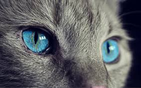

Gallery



I am an UnderGraduate Student from Kolkata studying in IIIT Hyderabad.
Having completed my Schooling from Don Bosco,Kolkata I am currently pursuing an Integrated Degree of B. Tech in Computer Science with Masters in Computational Natural Sciences.
Studying in a school operating under ICSE Board, I was introduced to computer programming at an early age. I had developed my interests in coding and became passionate of making simple java games. Competing with my classmates, I managed to make codes for games like - Tic Tac Toe, BlackJack, Threes and an animation which I named Walking Man
Having a family business based on Corporate Advertisement, my love for aesthetic design my passion for functionality and structure evolved. Jumping right into Photoshop didn’t feel accurate anymore and skipping the steps of building a framework based on functionality and usability became inevitable.
Apart from coding and designing, my hobbies have always kept changing. I am a fast learner and I always try to learning something new. Painting, inline skating, making pop-up cards, doing magic tricks, playing intruments like keyboard and chromatic harmonica,games like badminton and table tennis, listening to music and dancing are some of my interests.
I am proficient in the following softwares that are of utmost use in the present time:
1. OPERATING SYSTEM - Windows , UbuntuEveryone should learn how to code, it teaches you how to think. - Steve Jobs
If you want to collaborate on crafting amazing experience for people, you are very welcome to contact me.
I am available for freelance projects and full-time employment in the near future.
IIIT Hyderabad
mayank.musaddi@research.iiit.ac.in
+91 99999 99999